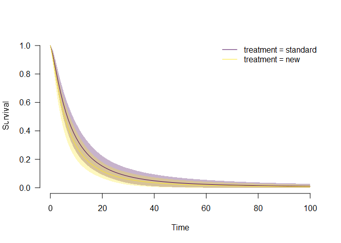

Robust Bayesian Survival Analysis (RoBSA)
This package estimates an ensemble of parametric survival models with different parametric families and uses Bayesian model averaging to combine them. The RoBSA ensemble uses Bayes factors to test for the presence or absence of effects of the individual predictors and evaluates the support for each parametric family. The resulting model-averaged parameter estimates are based on posterior model probabilities. The user can define a wide range of prior distributions for the effect size, intercepts, and auxiliary parameters. The package provides convenient functions for summary, visualizations, and fit diagnostics.
See Bartoš et al. (2022) (https://doi.org/10.1186/s12874-022-01676-9) introducing the methodology.
Installation
The package requires JAGS 4.3.1 to be installed. The development version of the package can be installed from GitHub:
devtools::install_github("FBartos/RoBSA")Example
To illustrate the package’s functionality, we use the veteran data set from the survival package containing 137 survival times of patients from a randomized trial of two treatment regimens for lung cancer. We start by loading the package and data set.
library("RoBSA")
#> Loading required namespace: runjags
data(cancer, package = "survival")
head(veteran)
#> trt celltype time status karno diagtime age prior
#> 1 1 squamous 72 1 60 7 69 0
#> 2 1 squamous 411 1 70 5 64 10
#> 3 1 squamous 228 1 60 3 38 0
#> 4 1 squamous 126 1 60 9 63 10
#> 5 1 squamous 118 1 70 11 65 10
#> 6 1 squamous 10 1 20 5 49 0Before we fit the RoBSA ensemble with five accelerated failure times parametric families (exponential, Weibull, log-normal, log-logistic, and gamma), we must specify prior distributions for the intercepts and auxiliary parameters (governing the scales and shapes) of the competing parametric families. Here, we assume that we would expect the median survival type in the standard treatment group to be 5 years with an interquartile range of 10 years. We set the standard deviation of the prior distributions to 0.5, which provides us with a satisfactory degree of uncertainty about the parameter values. We obtain the corresponding prior distributions by using the calibrate_quartiles() function. Subsequently, we print the list containing priors for the intercepts and auxiliary parameters.
priors <- calibrate_quartiles(median_t = 5, iq_range_t = 10, prior_sd = 0.5)
priors
#> $intercept
#> $intercept$`exp-aft`
#> Normal(1.98, 0.5)
#> $intercept$`weibull-aft`
#> Normal(2.06, 0.5)
#> $intercept$`lnorm-aft`
#> Normal(1.61, 0.5)
#> $intercept$`llogis-aft`
#> Normal(1.61, 0.5)
#> $intercept$`gamma-aft`
#> Normal(2.46, 0.5)
#>
#> $aux
#> $aux$`weibull-aft`
#> Lognormal(-0.36, 0.57)
#> $aux$`lnorm-aft`
#> Lognormal(0.2, 0.37)
#> $aux$`llogis-aft`
#> Lognormal(0.15, 0.39)
#> $aux$`gamma-aft`
#> Lognormal(-0.53, 0.63)We create a new data.frame object containing a fit ready data set. We (1) transform the survival times to years, (2) code the treatment variable as a factor and set "standard" as the default level (to test for effect of the "new" treatment effect; so the intercept of the model corresponds to the standard treatment and the treatment estimate to the improvement in the test treatment), and (3) scale the Karnofsky performance score (karno) to range from 0-1 (i.e., the coefficient estimate corresponds to the biggest possible difference).
df <- data.frame(
time = veteran$time / 12,
status = veteran$status,
treatment = factor(ifelse(veteran$trt == 1, "standard", "new"), levels = c("standard", "new")),
karno_scaled = veteran$karno / 100
)
head(df)
#> time status treatment karno_scaled
#> 1 6.0000000 1 standard 0.6
#> 2 34.2500000 1 standard 0.7
#> 3 19.0000000 1 standard 0.6
#> 4 10.5000000 1 standard 0.6
#> 5 9.8333333 1 standard 0.7
#> 6 0.8333333 1 standard 0.2Hypothesis Testing
We proceed by specifying a RoBSA model intended to test an informed hypothesis of the presence of the treatment effect centered around the log(AF) of 0.3 with the sd of 0.1,5 via the informed prior distribution on the treatment effect. To set a prior distribution on factor, we use the prior_factor() function. This allows us to specify the type of contrast we want to use. Here, we use "treatment" contrast to estimate differences from the default level (we could also use orthonormal to test for a difference of the individual levels from the grand mean). Furthermore, we adjust for the Karnofsky performance score by setting a wider centered standard normal prior distribution . To test only for the presence of the treatment effect and include the covariate in all models, we set test_predictors = "treatment". Finally, we pass the appropriate prior distributions to the priors, prior_intercept, prior_aux arguments, set seed = 1 for reproducibility, and use parallel = TRUE for speeding up the computation.
fit.test <- RoBSA(
Surv(time, status) ~ treatment + karno_scaled,
data = df,
priors = list(
treatment = prior_factor("normal", parameters = list(mean = 0.30, sd = 0.15),
truncation = list(0, Inf), contrast = "treatment"),
karno_scaled = prior("normal", parameters = list(mean = 0, sd = 1))
),
test_predictors = "treatment",
prior_intercept = priors[["intercept"]],
prior_aux = priors[["aux"]],
parallel = TRUE, seed = 1
) The summary() functions provides the main summary of the fitted model.
summary(fit.test)
#> Call:
#> RoBSA(formula = Surv(time, status) ~ treatment + karno_scaled,
#> data = df, priors = list(treatment = prior_factor("normal",
#> parameters = list(mean = 0.3, sd = 0.15), truncation = list(0,
#> Inf), contrast = "treatment"), karno_scaled = prior("normal",
#> parameters = list(mean = 0, sd = 1))), test_predictors = "treatment",
#> prior_intercept = priors[["intercept"]], prior_aux = priors[["aux"]],
#> parallel = TRUE, seed = 1)
#>
#> Robust Bayesian survival analysis
#> Distributions summary:
#> Models Prior prob. Post. prob. Inclusion BF
#> exp-aft 2/10 0.200 0.321 1.894
#> weibull-aft 2/10 0.200 0.026 0.105
#> lnorm-aft 2/10 0.200 0.149 0.699
#> llogis-aft 2/10 0.200 0.499 3.991
#> gamma-aft 2/10 0.200 0.005 0.019
#>
#> Components summary:
#> Models Prior prob. Post. prob. Inclusion BF
#> treatment 5/10 0.500 0.129 0.148
#>
#> Model-averaged estimates:
#> Mean Median 0.025 0.975
#> treatment[new] 0.019 0.000 0.000 0.224
#> karno_scaled 2.499 2.508 1.647 3.336In the first table, we see that most posterior model probability is retained by the log-logistic (0.499), exponential (0.321), and log-normal (0.149) family, with the inclusion Bayes factors quantifying the change from prior to posterior model probabilities.
The second table then summarizes information about hypothesis tests of the model components. Here, in the RoBSA ensemble intended for testing, we are interested in the inclusion Bayes factor for the treatment effect. We find Bayes factor 0.148, indicating that there is moderate evidence in favor of no treatment effect (1/0.148 = 6.76) in comparison to our informed hypothesis of a positive treatment effect.
Parameter Estimation
Now we try to estimate the model-averaged estimate of the difference between the two treatments. We change the prior distribution from the informed positive treatment effect to a neutral standard normal prior distribution allowing for both positive and negative treatment effect. We further set test_predictors to "" in order to omit models assuming zero treatment effect.
fit.est <- RoBSA(
Surv(time, status) ~ treatment + karno_scaled,
data = df,
priors = list(
treatment = prior_factor("normal", parameters = list(mean = 0, sd = 1),
contrast = "treatment"),
karno_scaled = prior("normal", parameters = list(mean = 0, sd = 1))
),
test_predictors = "",
prior_intercept = priors[["intercept"]],
prior_aux = priors[["aux"]],
parallel = TRUE, seed = 1
)
summary(fit.est)
#> Call:
#> RoBSA(formula = Surv(time, status) ~ treatment + karno_scaled,
#> data = df, priors = list(treatment = prior_factor("normal",
#> parameters = list(mean = 0, sd = 1), contrast = "treatment"),
#> karno_scaled = prior("normal", parameters = list(mean = 0,
#> sd = 1))), test_predictors = "", prior_intercept = priors[["intercept"]],
#> prior_aux = priors[["aux"]], parallel = TRUE, seed = 1)
#>
#> Robust Bayesian survival analysis
#> Distributions summary:
#> Models Prior prob. Post. prob. Inclusion BF
#> exp-aft 1/5 0.200 0.254 1.360
#> weibull-aft 1/5 0.200 0.021 0.086
#> lnorm-aft 1/5 0.200 0.206 1.036
#> llogis-aft 1/5 0.200 0.515 4.252
#> gamma-aft 1/5 0.200 0.004 0.016
#>
#> Model-averaged estimates:
#> Mean Median 0.025 0.975
#> treatment[new] -0.179 -0.176 -0.561 0.193
#> karno_scaled 2.539 2.544 1.715 3.336We again use the summary() function to obtain information about the fitted model. We find out that the experimental treatment led to notably shorter survival times with the mean model-averaged log(AF) = -0.19, 95% CI[-0.56, -0.19]. Furthermore, we observe an enormous effect of the scaled Karnofsky performance score, showing that moving from 0 to 1 increases the survival times with the mean model-averaged log(AF) = 2.54, 95% CI [1.72, 3.34].
MCMC Diagnostics
To assess the convergence of the MCMC model, we can use the diagnostics = TRUE argument in the summary() function. The resulting table shows the maximum MCMC error, min effective sample size and maximum R-hat for each of the models.
summary(fit.est, type = "diagnostics")
#> Call:
#> RoBSA(formula = Surv(time, status) ~ treatment + karno_scaled,
#> data = df, priors = list(treatment = prior_factor("normal",
#> parameters = list(mean = 0, sd = 1), contrast = "treatment"),
#> karno_scaled = prior("normal", parameters = list(mean = 0,
#> sd = 1))), test_predictors = "", prior_intercept = priors[["intercept"]],
#> prior_aux = priors[["aux"]], parallel = TRUE, seed = 1)
#>
#> Robust Bayesian survival analysis
#> Diagnostics overview:
#> Model Distribution Prior treatment Prior karno_scaled
#> 1 exp-aft treatment contrast: Normal(0, 1) Normal(0, 1)
#> 2 weibull-aft treatment contrast: Normal(0, 1) Normal(0, 1)
#> 3 lnorm-aft treatment contrast: Normal(0, 1) Normal(0, 1)
#> 4 llogis-aft treatment contrast: Normal(0, 1) Normal(0, 1)
#> 5 gamma-aft treatment contrast: Normal(0, 1) Normal(0, 1)
#> max[error(MCMC)] max[error(MCMC)/SD] min(ESS) max(R-hat)
#> 0.01473 0.037 712 1.002
#> 0.01706 0.040 625 1.002
#> 0.01486 0.037 745 1.001
#> 0.01486 0.038 694 1.003
#> 0.01500 0.041 589 1.008We find that while the R-hat and max MCMC error is satisfactory for all models from the RoBSA estimation ensemble, we might wish for a larger ESS. To achieve that, we would simply increase the number of sampling MCMC iterations by using the iter argument in the RoBSA() function. Furthermore detailed diagnostics such as trace plot, autocorrelation plots, and density plot for each parameter/model are provided via the diagnostics_trace(), diagnostics_autocorrelation(), and diagnostics_density() functions.
Visualizing Predicted Survival
We can also visualize the model ensemble predictions for survival or hazard. We visualize the model-averaged survival for each treatment group via the plot_survival() and using the predictor = "treatment" argument. By default, the remaining predictors are set to their mean/default level, but predictions for different values can be obtained by specifying the covariates_data argument.
plot_survival(fit.est, predictor = "treatment")
In alignment with the previous summary, we see that the model-averaged survival for the new treatment group is below the estimated treatment of the standard treatment group. Similarly, we could also visualize the model-averaged hazard plot_hazard() or obtain numerical estimates for the survival, hazard, density, mean survival, and standard deviation of the survival at different levels of detail via the predict() function.